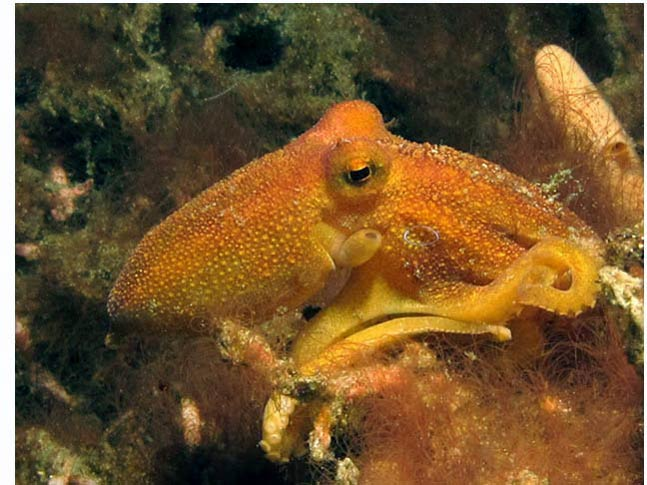

			  
			  
			  
              <DIV align="center"><!-- RRS4 <A href="javascript:Onetransport()"> --> </A></DIV>
                </TD>
          </TR>
          <TR>
            <TD bgcolor="#ffffff">
              <DIV align="center">
                <SELECT name="Oneslide" class="SmallBlack" onChange="Onechange();">
				  <OPTION value="Images/BI_Cephalopods/01_Mototi_Octopus.jpg"  selected>01 Mototi Octopus</OPTION>
				  <OPTION value="Images/BI_Cephalopods/02_Caribbean_Reef_Squid.jpg"  selected>02 Caribbean Reef Squid</OPTION>
				  <OPTION value="Images/BI_Cephalopods/03_Cuttlefish.jpg">03 Cuttlefish</OPTION>
				  <OPTION value="Images/BI_Cephalopods/04_Bobtail_Squid_Nabs_Shrimp.jpg">04 Bobtail Squid Nabs Shrimp</OPTION>
				  <OPTION value="Images/BI_Cephalopods/05_Night_Squid.jpg">05 Night Squid</OPTION>	
				  <OPTION value="Images/BI_Cephalopods/06_Agitated_Flamboyant_Cuttlefish.jpg">06 Agitated Flamboyant Cuttlefish</OPTION>
				  <OPTION value="Images/BI_Cephalopods/07_Calm_Flamboyant_Cuttlefish.jpg">07 Calm Flamboyant Cuttlefish</OPTION>
				  <OPTION value="Images/BI_Cephalopods/08_Mimic_Octopus.jpg">08 Mimic Octopus</OPTION>
				  <OPTION value="Images/BI_Cephalopods/09_Bobtail_Squid.jpg">09 Bobtail Squid</OPTION>
				  <OPTION value="Images/BI_Cephalopods/10_Up_From_The_Sand_Bobtail.jpg">10 Up From The Sand Bobtail</OPTION>
				  <OPTION value="Images/BI_Cephalopods/11_Mototi_Blue_Ring_Octopus.jpg">11 Mototi Blue Ring Octopus</OPTION>
				  <OPTION value="Images/BI_Cephalopods/12_Cuttlefish_Warning.jpg">12 Cuttlefish Warning</OPTION>
				  <OPTION value="Images/BI_Cephalopods/13_Caribbean_Reef_Squid.jpg">13 Caribbean Reef Squid</OPTION>	
				  <OPTION value="Images/BI_Cephalopods/14_Octopus_With_Eggs.jpg">14 Octopus With Eggs</OPTION>
				  <OPTION value="Images/BI_Cephalopods/15_Night_Time_Squid.jpg">15 Night Time Squid</OPTION>
				  <OPTION value="Images/BI_Cephalopods/16_Wonderpus_Octopus.jpg">16 Wonderpus Octopus</OPTION>
				  <OPTION value="Images/BI_Cephalopods/17_Cuttlefish.jpg">17 Cuttlefish</OPTION>		  
				  <OPTION value="Images/BI_Cephalopods/18_Hiding_Octopus.jpg">18 Hiding Octopus</OPTION>
				  <OPTION value="Images/BI_Cephalopods/19_Mimic_Octopus.jpg">19 Mimic Octopus</OPTION>
				  <OPTION value="Images/BI_Cephalopods/20_Mimic_Octopus_Color_Change.jpg">20 Mimic Octopus Color Change</OPTION>	
				  <OPTION value="Images/BI_Cephalopods/21_Mimic_Octopus_Morphing.jpg">21 Mimic Octopus Morphing</OPTION>
				  <OPTION value="Images/BI_Cephalopods/22_Caribbean_Reef_Octopus.jpg">22 Caribbean Reef Octopus</OPTION>
				  </SELECT>
  